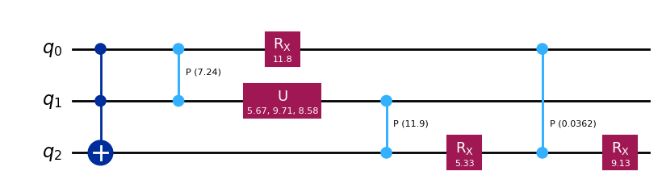
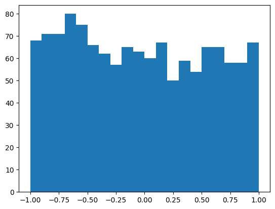

from genQC.platform.simulation import Simulator, CircuitBackendTypeCircuits dataset generation functions
Functions to create a quantum circuit dataset.
Generate random circuits
CircuitConditionType
CircuitConditionType (*values)
*Create a collection of name/value pairs.
Example enumeration:
class Color(Enum): … RED = 1 … BLUE = 2 … GREEN = 3
Access them by:
attribute access:
Color.RED <Color.RED: 1>
value lookup:
Color(1) <Color.RED: 1>
name lookup:
Color[‘RED’] <Color.RED: 1>
Enumerations can be iterated over, and know how many members they have:
len(Color) 3
list(Color) [<Color.RED: 1>, <Color.BLUE: 2>, <Color.GREEN: 3>]
Methods can be added to enumerations, and members can have their own attributes – see the documentation for details.*
get_rnd_encoded_circuit
get_rnd_encoded_circuit (backend:genQC.platform.backends.base_backend.Ba seBackend, tokenizer:genQC.platform.tokenizer.ci rcuits_tokenizer.CircuitTokenizer, condition:__main__.CircuitConditionType, num_of_qubits:int, gate_pool:Optional[Sequence[str]], min_gates:int, max_gates:int, rng:numpy.random._generator.Generator, optimized:bool=True, post_randomize_params:bool=True, return_params:bool=True)
Generate a random circuit with corresponding condition.
get_rnd_encoded_circuits
get_rnd_encoded_circuits (backend:genQC.platform.backends.base_backend.B aseBackend, tokenizer:genQC.platform.tokenizer. circuits_tokenizer.CircuitTokenizer, condition:__main__.CircuitConditionType, samples:int, num_of_qubits:int, min_gates:int, max_gates:int, min_sub_gate_pool_cnt:int=1, max_sub_gate_pool_cnt:Optional[int]=None, fixed _sub_gate_pool:Optional[Sequence[str]]=None, max_num_params:Optional[int]=None, filter_unique:bool=True, optimized:bool=True, post_randomize_params:bool=True, return_params:bool=True, silent:bool=False)
Generate ´samples´ number of random circuits with corresponding condition. Creates prompts for conditioning.
Dataset generation
generate_circuit_dataset
generate_circuit_dataset (backend:genQC.platform.backends.base_backend.B aseBackend, tokenizer:genQC.platform.tokenizer. circuits_tokenizer.CircuitTokenizer, condition:__main__.CircuitConditionType, total_samples:int, num_of_qubits:int, min_gates:int, max_gates:int, batch_samples:int=128, n_jobs:int=1, unitary_dtype:torch.dtype=torch.float16, min_sub_gate_pool_cnt:int=1, max_sub_gate_pool_cnt:Optional[int]=None, fixed _sub_gate_pool:Optional[Sequence[str]]=None, max_num_params:Optional[int]=None, filter_unique:bool=True, optimized:bool=True, post_randomize_params:bool=True, return_params:bool=True)
*Generates ´samples´ number of random circuits with corresponding condition. Supports large scale dataset with large unitaries. Uses memory mapping and parallelization.
- ´unitary_dtype´ only relevant for ´condition=CircuitConditionType.UNITARY´*
Test
simulator = Simulator(CircuitBackendType.QISKIT)
tokenizer = CircuitTokenizer({"rx":1, "ccx":2, "u":3, "cp": 4})list(tokenizer.vocabulary)['rx', 'ccx', 'u', 'cp']Random circuits with condition
qc, condition, qc_tensor, params_tensor = get_rnd_encoded_circuit(backend=simulator.backend,
tokenizer=tokenizer,
condition=CircuitConditionType.UNITARY,
gate_pool=tokenizer.vocabulary,
num_of_qubits=3,
min_gates=4,
max_gates=8,
rng=np.random.default_rng())
display(qc.draw("mpl"), qc_tensor, params_tensor, condition)
tensor([[-2, 4, 1, 0, 0, 0, 4, 0],
[-2, 4, 0, 3, 4, 0, 0, 0],
[ 2, 0, 0, 0, 4, 1, 4, 1]], dtype=torch.int32)tensor([[ 0.0000, 0.1530, 0.8770, -0.0982, 0.8894, -0.1517, -0.9942, 0.4529],
[ 0.0000, 0.0000, 0.0000, 0.5461, 0.0000, 0.0000, 0.0000, 0.0000],
[ 0.0000, 0.0000, 0.0000, 0.3656, 0.0000, 0.0000, 0.0000, 0.0000]])tensor([[[-0.5160, 0.0000, 0.1092, 0.0922, 0.0000, -0.2913, -0.1705, -0.0078],
[ 0.0059, -0.5158, 0.0487, 0.0356, -0.2911, -0.0280, 0.0643, 0.1626],
[-0.1575, 0.0191, -0.4388, -0.2793, 0.0899, -0.0853, 0.6793, 0.0832],
[ 0.0209, -0.1561, -0.1054, 0.1762, -0.0866, 0.0817, -0.1028, -0.4679],
[ 0.0000, -0.2913, -0.1705, -0.0078, -0.5160, 0.0000, 0.1092, 0.0922],
[-0.2913, 0.0022, 0.0614, 0.1631, 0.0017, -0.5160, 0.0496, 0.0260],
[-0.0652, -0.0889, 0.3769, -0.0596, -0.1511, -0.0264, -0.1630, -0.2675],
[-0.0890, -0.0645, -0.2472, -0.4959, -0.0259, -0.1516, -0.1986, -0.2816]],
[[ 0.0000, -0.2100, -0.1229, 0.0109, 0.7160, 0.0000, -0.1515, 0.0664],
[-0.2098, -0.0145, 0.0458, -0.2253, -0.0114, 0.7155, -0.0669, 0.0238],
[-0.0470, -0.0641, 0.2716, 0.0827, 0.2096, 0.0366, 0.2261, -0.1928],
[-0.0635, -0.0514, -0.1815, 0.6940, 0.0332, 0.2130, 0.2726, -0.2176],
[ 0.7160, 0.0000, -0.1515, 0.0664, 0.0000, -0.2100, -0.1229, 0.0109],
[ 0.0009, 0.7160, -0.0695, 0.0206, -0.2099, -0.0042, 0.0448, -0.2266],
[ 0.2186, -0.0265, 0.6088, -0.2013, 0.0648, -0.0615, 0.4896, -0.1154],
[-0.0263, 0.2188, 0.1541, 0.1425, -0.0617, 0.0636, -0.0679, 0.6583]]], dtype=torch.float64)tensors, ys, Us, params = get_rnd_encoded_circuits(backend=simulator.backend,
tokenizer=tokenizer,
condition=CircuitConditionType.UNITARY,
samples=128,
num_of_qubits=4,
min_gates=4,
max_gates=16,
min_sub_gate_pool_cnt=2)
display(tensors[0], ys[0], params[0], Us.shape)[INFO]: Generated unique circuits: 125.
[INFO]: No max_num_params provided, infered p_max_para=3, p_min_value=tensor(-0.9998) and p_max_value=tensor(0.9996).tensor([[-2, -2, 4, 2, 0, 4, 2, -2, 0, 0, 0, 4, 0, 0, 0, 0],
[ 0, -2, 0, 0, 2, 0, -2, 2, 0, 2, 0, 0, -2, 0, 0, 0],
[ 2, 2, 4, -2, -2, 4, -2, -2, 4, -2, 4, 4, 2, 0, 0, 0],
[-2, 0, 0, -2, -2, 0, 0, 0, 4, -2, 4, 0, -2, 0, 0, 0]], dtype=torch.int32)np.str_("Compile using: ['ccx', 'cp']")tensor([[ 0.0000, 0.0000, 0.9185, 0.0000, 0.0000, -0.0226, 0.0000, 0.0000, -0.1110, 0.0000, -0.8066, -0.6071, 0.0000, 0.0000, 0.0000, 0.0000],
[ 0.0000, 0.0000, 0.0000, 0.0000, 0.0000, 0.0000, 0.0000, 0.0000, 0.0000, 0.0000, 0.0000, 0.0000, 0.0000, 0.0000, 0.0000, 0.0000],
[ 0.0000, 0.0000, 0.0000, 0.0000, 0.0000, 0.0000, 0.0000, 0.0000, 0.0000, 0.0000, 0.0000, 0.0000, 0.0000, 0.0000, 0.0000, 0.0000]])torch.Size([125, 2, 16, 16])ys[:5]array(["Compile using: ['ccx', 'cp']", "Compile using: ['ccx', 'u']", "Compile using: ['ccx', 'u', 'cp']", "Compile using: ['rx', 'ccx', 'u', 'cp']", "Compile using: ['ccx', 'cp']"], dtype='<U39')data = params.flatten()
ind = data.nonzero(as_tuple=True)
plt.hist(data[ind], bins=20)
plt.show()
def test_unitary(tensor, param, should_U, rtol, atol):
instructions = tokenizer.decode(tensor, param)
qc = simulator.genqc_to_backend(instructions)
is_U = simulator.backend.get_unitary(qc)
is_U = torch.stack([torch.from_numpy(np.real(is_U)), torch.from_numpy(np.imag(is_U))])
assert torch.allclose(is_U, should_U, rtol=rtol, atol=atol)for tensor, param, should_U in tqdm(zip(tensors, params, Us), total=tensors.shape[0]):
test_unitary(tensor, param, should_U, rtol=1e-03, atol=1e-05)Generate Dataset
tensors, ys, Us, params = generate_circuit_dataset(backend=simulator.backend,
tokenizer=tokenizer,
condition=CircuitConditionType.UNITARY,
total_samples=512,
n_jobs=2,
num_of_qubits=3,
min_gates=4,
max_gates=16,
unitary_dtype=torch.float64,
min_sub_gate_pool_cnt=2)
display(Us.dtype, Us.shape)[INFO]: Generated 498 valid circuits.
[INFO]: After filtering unique circuits: 494.torch.float64torch.Size([494, 2, 8, 8])for tensor, param, should_U in tqdm(zip(tensors, params, Us), total=tensors.shape[0]):
test_unitary(tensor, param, should_U, rtol=1e-03, atol=1e-05)